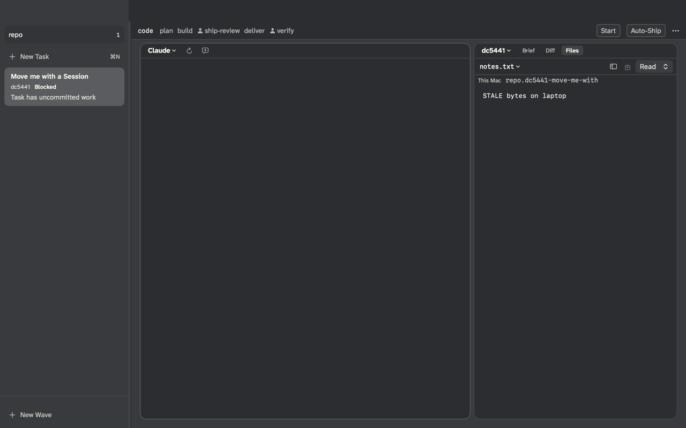
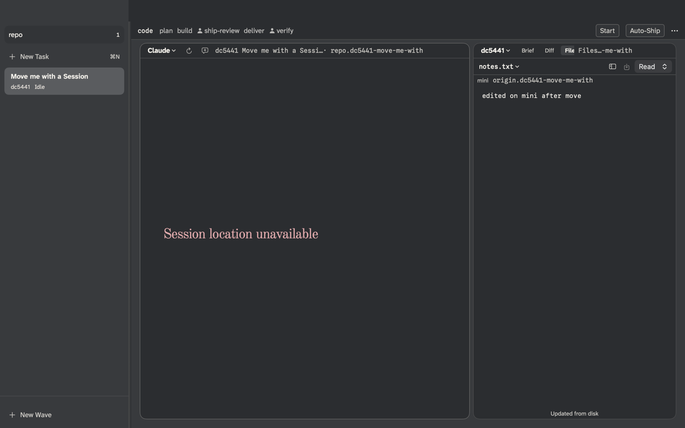
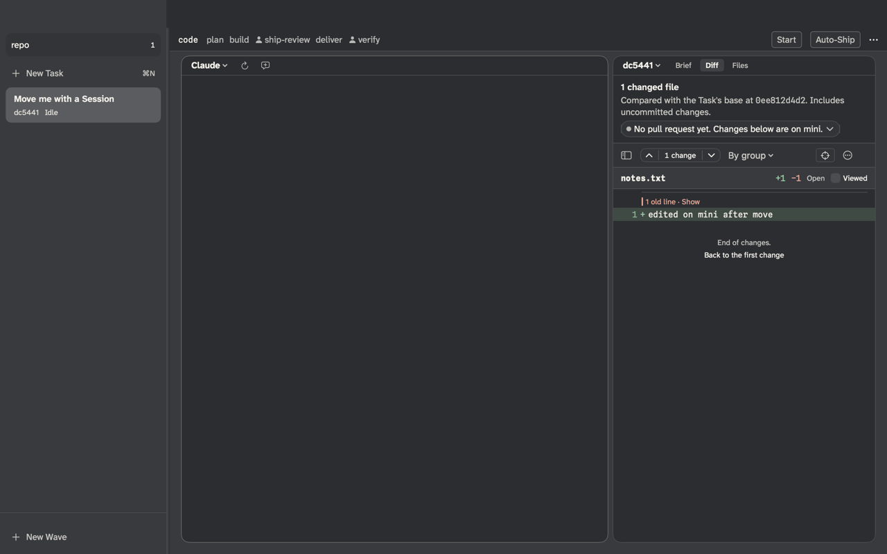
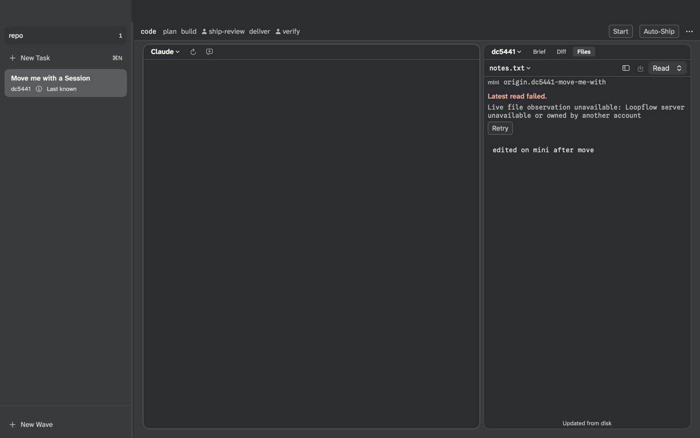
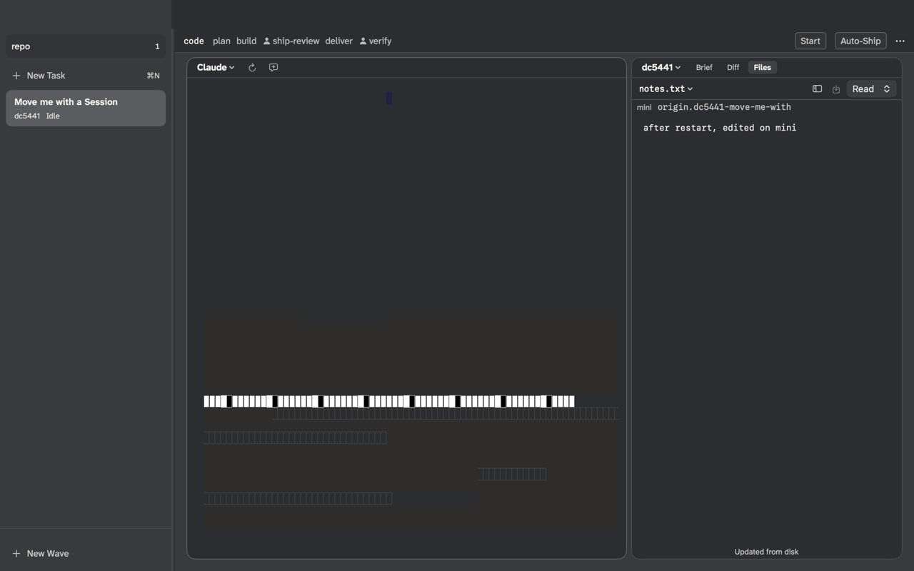

Laptop and mini as two private homes on this Mac, mini reached through a stand-in ssh, each running the branch lf server run. Set up with the CLI only (machine add, task create, task move --machine mini, --machine mini task checkout). Then the branch CLI in a PTY, the laptop's socket, and an isolated Dev bundle of Desktop with the QA hook (screen locked). Recipe: .lf/qa/remote-task-workspace.md. The first run's report is in git history (e348359e59:scratch/qa.html).
| Scenario | What I did | What I saw |
|---|---|---|
| Unstarted Task on mini, then checkout | task.files.watch + task.files on the laptop socket; then lf --machine mini task checkout; then an edit on mini | task.files: not_found {reason: not_started}. The watch read {checkout: null, machine_label: "mini"} and went live under its id. But between the two it published unavailable: "mini is unavailable: io error: No such file or directory (os error 2); check `ssh mini lf server status`". Mini writes the task_checkouts row ~100 ms before Git makes the directory (sampled: row=… dir=no, then dir=yes). Fixed: the watch treats a recorded checkout without .git as not yet arrived; its CheckoutReady event is the next planning write. After: null → mini's checkout, no outage frame. |
lf open --task -a claude, owner with no default_agent | PTY, typed hello | provider on mini in …/origin.64c080-fix-the-remote, mini received hello. (First QA's #1 is gone.) |
| Detach from a bridged Session | Ctrl+] | Detached from “64c080 Fix the remote notes”; it keeps running. Return with: lf open --task task_64c0… |
| Leave (provider exits) | typed quit | Before: Left “64c080 …”. Continue with: lf resume c7ae330b…, which fails on the laptop. The compress step dropped the output-byte rewrite: the owner's leave line is terminal output, not a Return event. Restored, with a unit test. After: Continue with: lf open --task task_64c0…. |
| Machine-only Session, both flag orders | lf open --machine mini --session <sid> --here, lf --machine mini open … | Input answered; detach and leave lines both say lf open --machine home_1b89… --session c7ae… (the Machine id, by design, so a rename keeps it working). |
| Shell on mini | lf desktop shell <task> --id qa-shell --create -- /bin/sh -c 'hostname; pwd; echo HOME=$HOME' | /private/tmp/lfq83/w/remote/src/origin.64c080-…, HOME=/tmp/lfq83/w/remote. |
| Unstarted Task, CLI | lf task files, lf desktop shell | Error: Task task_8e90… is not started, once each. |
| Mini unreachable, then back | touch bin/ssh.offline; lf task files|changes; remove it | One line naming mini and the ssh check (0.17 s). After: unstaged notes.txt, mini's bytes; the laptop clone untouched. |
| Desktop: move with Files open | Laptop Task with a checkout and a prepared Session, Files on notes.txt (laptop's copy edited “STALE bytes on laptop”); lf task move --machine mini; edit on mini | Files re-read on its own: mini origin.dc5441-move-me-with, “edited on mini after move”. Row went from “Blocked · Task has uncommitted work” to “Idle”. |
| Desktop: Session pane after the move | Snapshot; then lf --task … desktop focus -p session | Before a visit the pane says Session location unavailable, and its strip still names the laptop checkout repo.dc5441-move-me-with. After the visit it attaches on mini (desktop capture: provider on mini in …/origin.dc5441-…). Desktop's Session reading for it offers Open here with help “lf resume b3bc…”, a command that fails on the laptop. |
| Desktop: Diff chip | desktop do details page=diff | “No pull request yet. Changes below are on mini.” (was “local”). |
| Desktop: laptop server restart with Files open | Kill and restart the laptop server; 35 s later edit on mini | During: “Live file observation unavailable … Retry”, row “Last known”. After: the new bytes, no error, row “Idle”, with no click. (First QA's #2 is gone.) |
Local Files before the move, then the same pane after it (Files on mini; Session pane not yet visited):


Diff chip names mini:

Laptop server down, then recovered with mini's new edit (the terminal area is Ghostty drawn through cacheDisplay while locked; not a judgment of the pane):


TaskFilesWatch waits for .git before watching a recorded checkout (ops/task/workspace.rs), so a Task's checkout arriving on mini never reads as “mini is unavailable”.ReturnCommand::rewrite_bytes rewrites the owner's leave line in terminal output again (transport.rs), with transport::tests::a_remote_leave_line_names_this_machines_command.cargo test -p loopflow-execution --lib transport::tests::a_remote_leave_line ok (new) cargo test -p loopflow --test integration machine_commands::server_routed_task_workspace ok, 36.6 s cargo test -p loopflow --test integration open_remote_workspace ok, 17.1 s cargo clippy -p loopflow-execution --all-targets -- -D warnings clean; cargo fmt Desktop/iOS RemoteTaskWorkspaceTests: not rerun (no Swift change); gate runs them.
WorkspacePanesView._terminal compares the pane's saved location with the Session record's, and nothing updates the pane, because the unscoped local Session list no longer has the moved Session. Seen only with the screen locked; whether a click on the pane counts as the visit there is unchecked.lf resume <id>, which fails on the laptop (same class as the leave line).desktop send answered “Session input is paused or held by another viewer”.RemoteTaskWorkspaceTests are gate's.